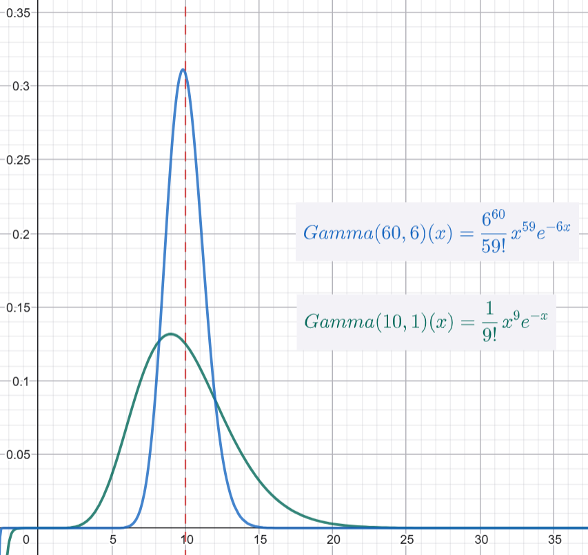

0^0
About
Zero to the Zeroth Power
Categories
All
(21)
Cheat Sheet
(1)
Cryptography
(3)
Linear Algebra
(3)
NP-Reduction
(1)
Normal Distribution
(9)
Poker
(6)
news
(1)
statistic
(2)
Poker Lesson 6 - 極化的範圍 (Polarized Range) - 比大小遊戲
Poker
在上一篇文章中，我們探討了
單向資訊不對稱
（Player A 全盲、Player B 全知）的極端狀況，並推導出了最佳詐唬與跟注頻率。我們利用了「雙曲面」與「翹翹板」的心智模型，解釋了雙方如何在這個資訊落差中尋找平衡。
Dec 14, 2025
Tai-Ning Liao
Poker Lesson 5 - 雙曲面 Payoff
Poker
來延續上一篇的設定，假設 A 跟 B 玩 Seven-card stud，
\(40-80\)
元有限注，池底有
\(P = 100\)
元。
Dec 6, 2025
Tai-Ning Liao
Poker Lesson 4 - 如何詐唬
Poker
在德州撲克中，有三種不確定性來源:
Dec 5, 2025
Tai-Ning Liao
一天證明一個 Normal Distribution 的性質 Day9： Poisson Summation Formula
Normal Distribution
小時候就學過無窮等比級數:
Nov 30, 2025
Tai-Ning Liao
一天證明一個 Normal Distribution 的性質 Day8： C n 取 k
Normal Distribution
「從 52 張撲克牌中，隨機抽 7 張牌，有多少種不同的組合方式？」
Nov 29, 2025
Tai-Ning Liao
Poker Lesson 3 - hands 組合數
Poker
今天我們來算一下 同花順、四條、葫蘆、同花、順子、三條、兩對、一對、散牌 在撲克中出現的機率。
Nov 28, 2025
Tai-Ning Liao
Poker Lesson 2 - 一次只能買到一張牌
Poker
假設 limit Texas Hold’em 中，大小盲注是 30/60，目前翻出三張牌(the flop)，彩池中有 90 元，輪到 Player A 行動。翻牌是 A♥ K♦ 7♥。
Nov 27, 2025
Tai-Ning Liao
Poker Lesson 1 - 池底賠率 (Pot Odds)
Poker
先來談談賭博中最小的一步，要
繼續遊戲 (call)
還是
忍痛放棄 (fold)
。
Nov 26, 2025
Tai-Ning Liao
一天證明一個 Normal Distribution 的性質 Day7：Hermite Polynomials
Normal Distribution
今天回到我們的小數學風格，談點輕鬆的 Hermite Polynomials。
Nov 25, 2025
Tai-Ning Liao
一天證明一個 Normal Distribution 的性質 Day6：Chi-squared Test
Normal Distribution
假設我們有個 contingency table (列聯表) 如下：
Nov 21, 2025
Tai-Ning Liao
一天證明一個 Normal Distribution 的性質 Day5：獨立性的量尺: Cumulant
Normal Distribution
今天來講個輕鬆的小主題：
Cumulant
。
Nov 19, 2025
Tai-Ning Liao
一天證明一個 Normal Distribution 的性質 Day4：充分統計量與消息理論
Normal Distribution
今天來講統計學中「參數估計」(Parameter Estimation) 一個非常優雅的概念：
充分統計量 (Sufficient Statistic)
。
Nov 17, 2025
Tai-Ning Liao
最短的向量
Cryptography
NP-Reduction
Linear Algebra
假設在
\(\mathbb{R}^n\)
空間中有
\(n\)
個向量
\(v_1, ..., v_n\)
，要找他們的整係數線性組合，使得其長度最小(但非零)。
\[ \begin{array}{cl} \min & \Big\| v \Big\|_2…
Nov 16, 2025
Tai-Ning Liao
10 Types of Common Distributions
statistic
Cheat Sheet
Let’s list 10 common…
Nov 14, 2025
Tai-Ning Liao
一天證明一個 Normal Distribution 的性質 Day3：多變量常態分佈
Normal Distribution
今天來講
\(n\)
維空間的多變量常態分佈 (Multivariate Normal Distribution)。高維空間的常態分佈雖然在形式上只是把一維的做
\(n\)
次方，但他豐富的特性，卻讓它在統計學、機器學習，甚至於密碼學、純數學理論中都有非常重要的應用。
Nov 14, 2025
Tai-Ning Liao
一天證明一個 Normal Distribution 的性質 Day2：特徵函數(CF)與傅立葉變換
Normal Distribution
今天來講一下 moment generation function 跟 characteristic function。
Nov 13, 2025
Tai-Ning Liao
聊聊 Error Correcting Code (ECC) 的基石：Linear Code
Cryptography
Linear Algebra
今天我們來聊聊一個在資訊傳輸中超級重要，但也最基礎的概念：Error Correcting Code (ECC)，特別是其中的「
Linear Code
」（線性碼）。
Nov 12, 2025
Tai-Ning Liao

Conjugate Prior
statistic
在貝氏統計 (Bayesian statistics) 中，我們經常需要估計一個未知參數的機率分佈。
Nov 12, 2025
Tai-Ning Liao
一天證明一個 Normal Distribution 的性質 Day1：高斯積分與最大化熵(Entropy)
Normal Distribution
我們將介紹的第一個分佈，是統計學中最著名的——常態分佈（Normal Distribution）。它通常被稱為高斯分佈 (Gaussian distribution)，以紀念偉大的數學家卡爾·弗里德里希·高斯 (Carl Friedrich Gauss)。
Nov 11, 2025
Tai-Ning Liao
萬聖節快樂
Linear Algebra
Cryptography
萬聖節就是要講鬼故事!
Oct 31, 2025
LTN
Welcome To My Blog
news
This is the first post in a Quarto blog. Welcome!
Oct 23, 2025
Tai-Ning Liao
No matching items